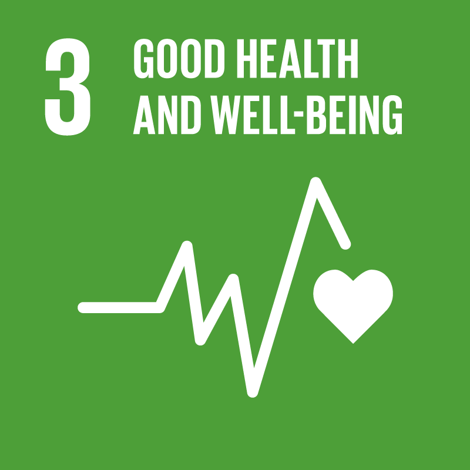
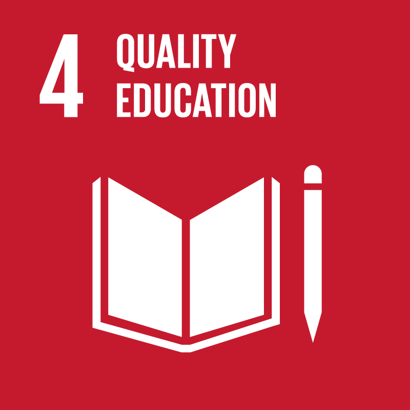
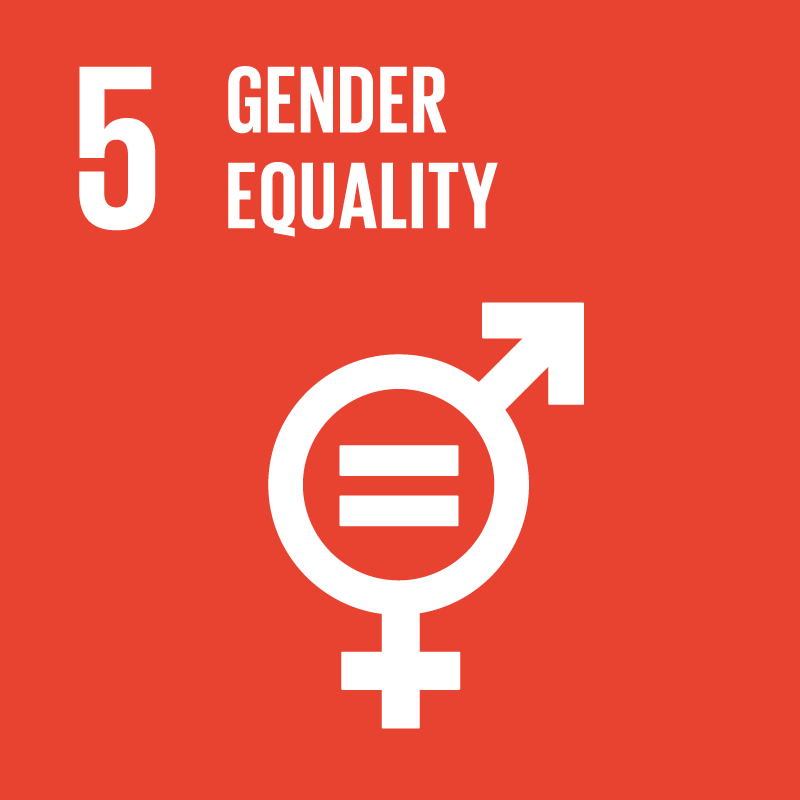
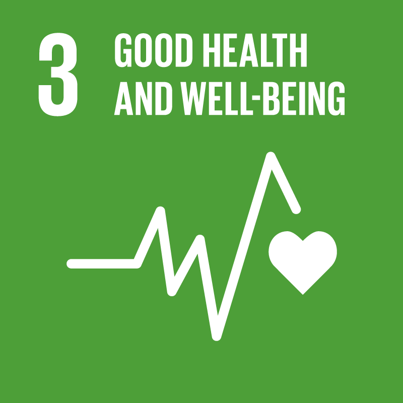
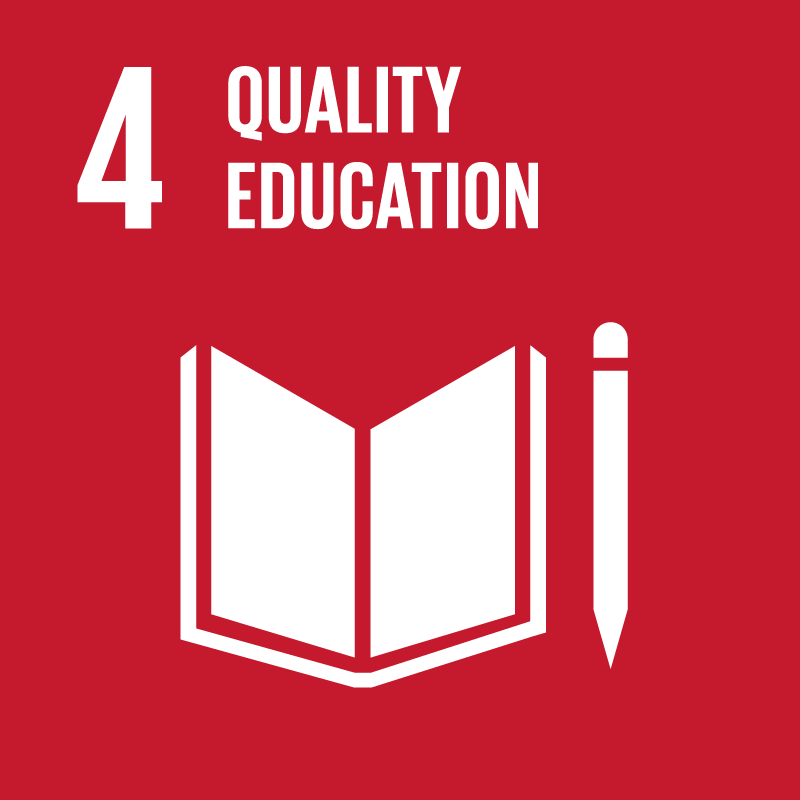
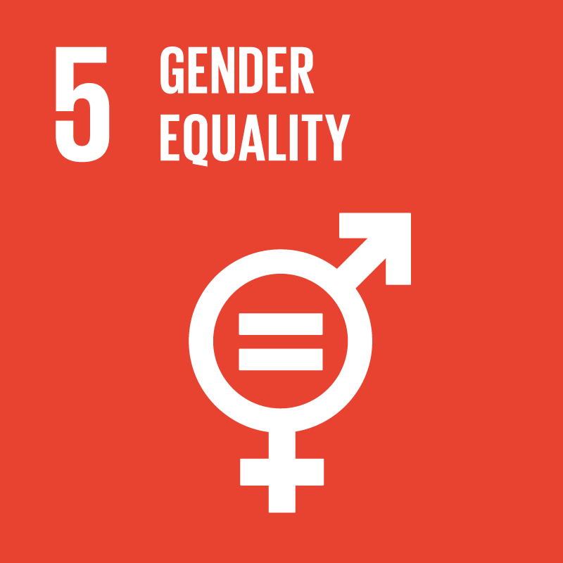

DE 17 VERDENSMÅL
På FN topmødet i New York i 2015 vedtog verdens stats- og regeringsledere en hidtil uset ambitiøs og samfundsforandrende udviklingsdagsorden, også kaldt 2030 dagsordenen.
Frem til 2030 skal denne dagsorden sætte kurs mod en mere bæredygtig udvikling for både mennesker og planeten, vi bor på.
Verdensmålene forpligter.
Medlemslandende forpligter sig til helt at afskaffe fattigdom og sult i verden, sikre god uddannelse og sundhed til alle, reducere ulighed, fremme ligestilling, anstændige jobs, bæredygtig vækst og forbrug.
Den nye dagsorden anerkender således at social, økonomisk og miljømæssig udvikling, fred, sikkerhed og internationalt samarbejde er tæt forbundet, og at det kræver en integreret indsats at opnå holdbare udviklingsresultater.
Verdensmålene gælder alle.
Målene gælder alle lande - både rige og fattige - dvs. de er universelle.
Udfordringer som social, økonomisk marginalisering, stigende ulighed, fødevareusikkerhed, ulig adgang til grundlæggende naturressourcer,og har regionale og globale konsekvenser.
Det er derfor afgørende at alle lande leverer og løfter opgaven i fællesskab.
DELMÅLENE
FN's 17 Verdensmål er opdelt i 169 delmål. Delmålene er mere konkrete mål for, hvordan Verdensmålene skal opfyldes. For at måle på hvert delmål har FN formuleret en række indikatorer for de enkelte delmål.
Se eksempler på enkelte delmål her:

 




